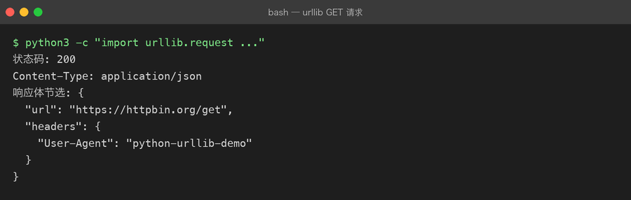
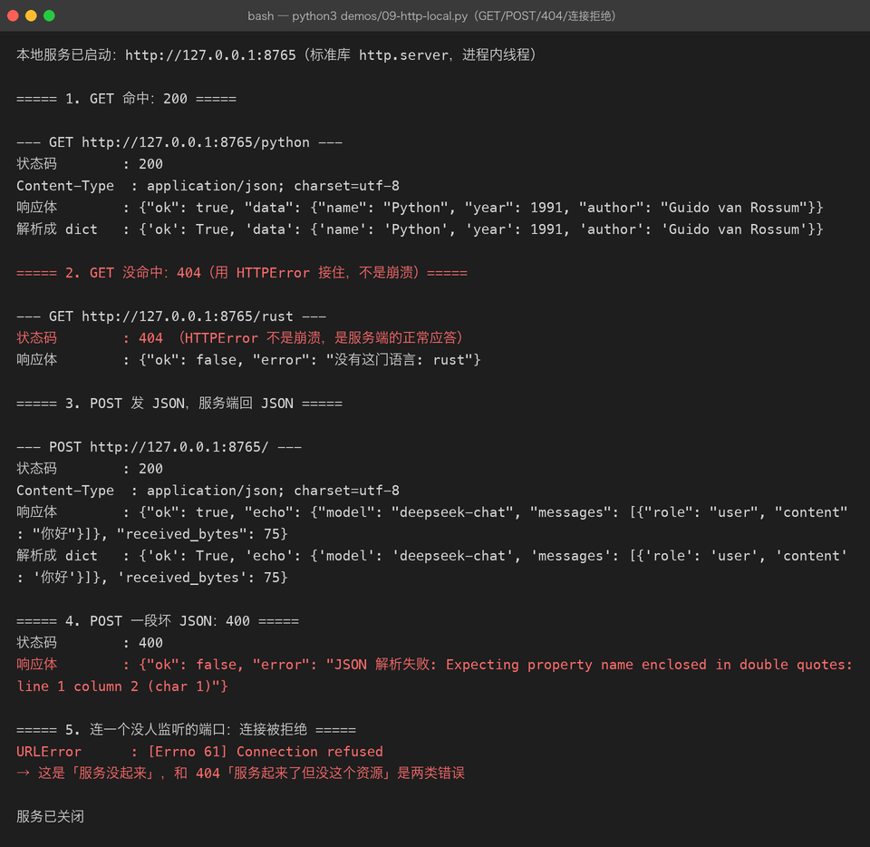

Lesson 09 — HTTP / API：让 Python AI CLI Assistant 第一次连接外部世界
项目：Python AI CLI Assistant 版本：v0.9 核心主题：HTTP【超文本传输协议】、API【应用程序编程接口】、Request【请求】、Response【响应】、JSON、Status Code【状态码】、Headers【请求头】、POST、Timeout【超时】
一、这一章的项目需求
前面的 AI CLI Assistant 是这样的：
用户
↓
Python
↓
Mock Response【模拟响应】
↓
AI CLI Assistant例如：
你：你好
AI：我收到你的问题了：你好这个“AI”其实并没有真正调用任何外部 AI 服务。
它只是：
def generate_mock_response(user_input):
return f"我收到你的问题了：{user_input}"所以 v0.9 我们提出一个新的项目需求：
让 Python 程序第一次真正访问一个外部 HTTP API。
先不接 LLM。
我们先让程序学会：
发送请求
↓
等待服务器
↓
接收响应
↓
解析 JSON
↓
处理错误掌握这条链路之后，下一章再把服务器换成大模型 API。
二、为什么 AI 工程师必须懂 HTTP？
因为以后你会不断遇到：
LLM API
Embedding API
Rerank API
Vector Database
MCP Server
Agent Tool
FastAPI
OpenAI-compatible API这些系统虽然业务不同，但底层经常都绕不开：
Client【客户端】
↓
HTTP Request【HTTP 请求】
↓
Server【服务器】
↓
HTTP Response【HTTP 响应】
↓
Client所以：
HTTP 是 AI 应用开发连接外部系统的一条基础公路。
三、先建立最重要的认知：API 到底是什么？
API：
API = Application Programming Interface【应用程序编程接口】
不要把 API 简单理解成：
“一个网址。”
API 更准确的理解是：
一个软件向另一个软件提供能力的约定。
例如：
天气系统
↓
提供：
查询天气
支付系统
↓
提供：
创建支付
查询支付
退款
LLM 服务
↓
提供：
文本生成
Embedding【嵌入】
Rerank【重排序】所以：
API
=
能力
+
调用规则
+
数据格式四、API 和 HTTP 是什么关系？
这是面试非常容易问的地方。
不要混淆：
API ≠ HTTPAPI 是：
软件之间约定如何调用能力。
HTTP 是：
网络通信协议。
例如：
你的 Python 程序
↓
调用 LLM API
↓
通过 HTTP
↓
LLM Server所以可以理解成：
API
↓
规定“我要调用什么、怎么传参数、返回什么”
HTTP
↓
负责“这些数据怎么在网络上传输”五、谁是 Client，谁是 Server？
在我们的项目里：
Python AI CLI Assistant
↓
Client【客户端】远程服务：
API Server
↓
Server【服务器】完整关系：
┌────────────────────┐
│ Python AI CLI │
│ Client【客户端】 │
└─────────┬──────────┘
│
│ HTTP Request【请求】
↓
┌────────────────────┐
│ API Server │
│ Server【服务器】 │
└─────────┬──────────┘
│
│ HTTP Response【响应】
↓
┌────────────────────┐
│ Python AI CLI │
└────────────────────┘六、Request【请求】到底是什么？
当客户端访问服务器时，会发送一个：
Request【请求】
例如：
POST /chat它可以包含：
Method【请求方法】
URL【地址】
Headers【请求头】
Body【请求体】可以先形成这个结构：
HTTP Request
│
├── Method
├── URL
├── Headers
└── Body七、Method【请求方法】
最常见：
GET
POST
PUT
DELETE初学阶段先重点理解：
GET
通常用于：
获取资源。
例如：
GET /users/100意思类似：
查询 ID=100 的用户。
POST
通常用于：
向服务器提交数据，创建资源或执行某个操作。
例如：
POST /chat并携带：
{
"message": "你好"
}意思就是：
把这条消息交给服务器处理。
PUT
通常用于：
更新资源。
DELETE
通常用于：
删除资源。
八、AI API 为什么经常使用 POST？
因为调用大模型时通常需要传递比较复杂的请求数据。
例如：
{
"model": "some-model",
"messages": [
{
"role": "user",
"content": "什么是 Java？"
}
]
}这种数据一般放到：
Request Body【请求体】中。
所以经常使用：
POST九、URL / Endpoint 是什么？
例如：
https://api.example.com/v1/chat这里可以先把它理解为：
Endpoint【接口端点】
就是：
服务器提供某项 API 能力的访问入口。
例如：
https://api.example.com是服务器。
而：
/v1/chat可能代表：
Chat API【聊天接口】
所以：
完整 URL
=
服务器地址
+
接口路径十、Headers【请求头】是什么？
HTTP 请求除了 URL 和 Body，还可以携带：
Headers【请求头】
例如：
Content-Type: application/json意思：
我发送的数据格式是 JSON。
还有：
Authorization: Bearer xxx意思通常是：
我正在提供身份认证信息。
所以可以理解：
Headers
=
请求的附加元信息十一、Body【请求体】是什么？
Body 就是：
真正提交给服务器的数据内容。
例如：
{
"message": "你好"
}它可以表示：
我想让服务器处理“你好”。
对于 LLM API，Body 往往更复杂：
{
"model": "model-name",
"messages": [
{
"role": "user",
"content": "你好"
}
]
}十二、Response【响应】
服务器处理请求之后，会返回：
Response【响应】
一个 HTTP Response 通常包含：
Response
│
├── Status Code【状态码】
├── Headers【响应头】
└── Body【响应体】例如：
200 OKBody：
{
"message": "你好，很高兴认识你"
}十三、Status Code【状态码】
状态码是 HTTP 中非常重要的一部分。
先记住几个高频的：
| 状态码 | 含义 |
|---|---|
| 200 | 请求成功 |
| 201 | 创建成功 |
| 400 | 请求参数有问题 |
| 401 | 未认证 / 身份认证失败 |
| 403 | 没有权限 |
| 404 | 资源不存在 |
| 429 | 请求过于频繁 |
| 500 | 服务器内部错误 |
| 502 | 网关错误 |
| 503 | 服务暂时不可用 |
不要死背所有状态码。
先建立：
2xx
→ 成功
4xx
→ 客户端请求有问题
5xx
→ 服务端处理有问题看一个真实例子 —— 用标准库 urllib 发一个 GET 请求，拿到 200：


十四、一个非常重要的面试点：401 vs 403
401
通常表示：
身份认证没有通过。
例如：
API Key 错误
Token 无效403
通常表示：
服务器知道你是谁，但你没有权限执行这个操作。
简单记：
401
→ 你是谁？
403
→ 你没有权限做这个事情。十五、我们开始真正写 HTTP Client
Python 标准库本身可以做 HTTP。
但是现代 Python 项目里，经常会使用第三方 HTTP Client【HTTP 客户端】库。
这一章我们使用：
httpx它是 Python 中常见的 HTTP Client。
进入：
source .venv/bin/activate安装：
python -m pip install httpx然后更新：
python -m pip freeze > requirements.txt现在：
requirements.txt中应该同时包含：
python-dotenv
httpx十六、第一个 HTTP Demo
创建：
projects/01-python-ai-cli/exercises/09-http-api/demo/01-get.py代码：
import httpx
response = httpx.get(
"https://httpbin.org/get",
timeout=10,
)
print("状态码：", response.status_code)
print("响应内容：", response.text)运行：
python 01-get.py你第一次真正完成：
Python
↓
HTTP GET
↓
Internet
↓
HTTP Server
↓
HTTP Response
↓
Python十七、这里到底发生了什么？
这一行：
response = httpx.get(...)背后发生的是：
httpx
↓
创建 HTTP Request
↓
发送到服务器
↓
服务器处理
↓
服务器返回 Response
↓
httpx 接收
↓
response 对象所以：
response不是字符串。
它是一个：
Response Object【响应对象】
里面包含：
response.status_code
response.headers
response.text以及后面会经常使用的：
response.json()十八、为什么有 .text 和 .json()？
服务器返回的数据可能是：
纯文本也可能是：
{
"name": "AI"
}如果服务器返回 JSON：
response.json()就可以把 JSON 响应转换成 Python 对象。
例如：
data = response.json()
print(data)得到的可能是：
{
"args": {},
"headers": {...},
"origin": "...",
"url": "..."
}这里再次连接到 Lesson 02：
JSON
↓
Python Dict / List所以前面学习 JSON 并不是孤立的。
十九、完整数据链路开始连接起来了
还记得 Lesson 02 吗？
我们学习：
Python Dict
↓
JSON现在：
Python Dict
↓
JSON Request Body
↓
HTTP
↓
Server
↓
JSON Response
↓
Python Dict这就是：
为什么我们之前一定要先学习 Dict 和 JSON。
二十、POST 请求
创建：
02-post.py代码：
import httpx
payload = {
"message": "你好，我正在学习 Python HTTP。",
"source": "ai-engineer-journey",
}
response = httpx.post(
"https://httpbin.org/post",
json=payload,
timeout=10,
)
print("状态码：", response.status_code)
data = response.json()
print("服务器收到的数据：")
print(data["json"])这里非常重要：
json=payload表示：
把 Python 对象作为 JSON 请求体发送。
二十一、json=payload 背后做了什么？
可以理解成：
Python Dict
↓
JSON Serialization【JSON 序列化】
↓
HTTP Request Body
↓
服务器然后服务器返回：
HTTP Response
↓
JSON
↓
response.json()
↓
Python Dict所以整个过程是：
Python
↓
Dict
↓
JSON
↓
HTTP
↓
Server
↓
HTTP
↓
JSON
↓
Dict
↓
Python这条链以后会反复出现。
二十二、Headers 怎么传？
例如：
headers = {
"Content-Type": "application/json",
}然后：
response = httpx.post(
url,
headers=headers,
json=payload,
timeout=10,
)完整结构：
response = httpx.post(
url,
headers=headers,
json=payload,
timeout=10,
)这里：
url
→ 请求发送到哪里
headers
→ 请求附加信息
json
→ 请求数据
timeout
→ 最多等待多久二十三、Timeout【超时】为什么非常重要？
想象：
Python
↓
发送请求
↓
服务器一直不响应
↓
Python 一直等
↓
程序卡住这是非常糟糕的。
所以：
timeout=10可以理解成：
如果等待时间超过设定值，就不要无限等下去。
AI API 中尤其重要。
因为：
LLM
↓
模型推理
↓
可能需要较长时间但这并不意味着客户端应该：
无限等待。
二十四、HTTP 异常
网络请求不是一定成功。
例如：
网络断开
DNS 失败
服务器超时
连接失败
HTTP 错误所以不能：
response = httpx.get(url)
print(response.json())然后假设世界永远正常。
应该开始建立：
try
↓
HTTP Request
↓
成功？
├── 是 → 处理 Response
└── 否 → Exception【异常】二十五、一个基础 HTTP 异常处理
import httpx
try:
response = httpx.get(
"https://httpbin.org/get",
timeout=10,
)
response.raise_for_status()
data = response.json()
print(data)
except httpx.HTTPStatusError as error:
print(f"HTTP 请求失败：{error}")
except httpx.RequestError as error:
print(f"网络请求失败：{error}")这里出现一个很重要的方法：
response.raise_for_status()二十六、raise_for_status() 是什么？
如果：
200一般不会抛出 HTTP 状态异常。
但是：
400
401
403
404
500等错误状态，就可能抛出：
HTTPStatusError于是代码可以：
Request
↓
Response
↓
raise_for_status()
↓
判断 HTTP 是否成功二十七、为什么不能只判断 status_code == 200？
当然可以：
if response.status_code == 200:
...但真实项目里状态码可能有很多成功情况：
200
201
202
204而且不同接口的成功状态可能不同。
所以：
response.raise_for_status()通常更适合处理：
“如果 HTTP 层失败，就进入异常流程。”
二十八、现在升级我们的 AI CLI Assistant
到目前为止：
assistant.py里面还是：
def generate_mock_response(user_input):
return f"我收到你的问题了：{user_input}"现在暂时不要直接接真实 LLM。
先把结构升级成：
assistant.py
│
↓
HTTP Client
│
↓
External API
│
↓
Response我们可以先使用一个测试 API 模拟远程服务。
二十九、增加 api_client.py
项目结构：
src/ai_cli/
├── __init__.py
├── main.py
├── config.py
├── conversation.py
├── assistant.py
├── formatter.py
├── storage.py
└── api_client.py为什么单独增加：
api_client.py？
因为：
assistant.py应该负责：
Assistant 的业务逻辑。
而：
api_client.py负责：
HTTP 通信。
这就是：
Separation of Concerns【关注点分离】
三十、api_client.py
import httpx
def get_demo_response(message):
payload = {
"message": message,
}
try:
response = httpx.post(
"https://httpbin.org/post",
json=payload,
timeout=10,
)
response.raise_for_status()
return response.json()
except httpx.HTTPStatusError as error:
raise RuntimeError(
f"远程服务返回 HTTP 错误：{error}"
) from error
except httpx.RequestError as error:
raise RuntimeError(
f"网络请求失败：{error}"
) from error三十一、assistant.py 开始调用 API Client
from .api_client import get_demo_response
def generate_response(user_input):
result = get_demo_response(user_input)
return f"服务器收到：{result['json']['message']}"现在：
assistant.py已经不需要知道：
HTTP
headers
timeout
httpx
异常这些细节。
它只知道：
我要获得一个远程响应。三十二、这就是分层的价值
以前：
main.py
↓
assistant.py
↓
所有代码混在一起现在：
main.py
↓
assistant.py
↓
api_client.py
↓
HTTP
↓
External API每层负责自己的事情。
三十三、联系描述：完整请求链路
这是这一章最重要的链路。
用户输入
↓
main.py
↓
assistant.py
↓
api_client.py
↓
构造 Request
│
├── Method = POST
├── URL
├── Headers
└── JSON Body
↓
HTTP
↓
API Server
↓
处理请求
↓
HTTP Response
│
├── Status Code
├── Headers
└── JSON Body
↓
api_client.py
↓
解析 JSON
↓
assistant.py
↓
生成 Assistant Response
↓
main.py
↓
展示给用户路线描述
用户首先输入问题，main.py 负责控制整个程序流程。它把用户问题交给 assistant.py，因为 Assistant 层负责决定“如何产生回答”。
assistant.py 又把真正的远程通信交给 api_client.py，这样业务逻辑和网络通信不会混在一起。
api_client.py 根据接口要求构造 HTTP Request，包括请求方法、接口地址、请求头和 JSON 请求体，然后通过 HTTP 发送给服务器。
服务器处理请求后返回 HTTP Response。Response 中包含状态码、响应头和响应体。api_client.py 首先处理 HTTP 层错误，然后把 JSON 响应解析成 Python 对象，再交给 assistant.py。
最后 assistant.py 把远程服务返回的数据转换成 Assistant 的业务结果，main.py 再负责展示。
所以整个项目真正形成了：
用户输入 → 业务层 → HTTP 客户端 → API → HTTP 响应 → 业务层 → 用户输出。
三十四、为什么下一章就可以接 LLM？
因为真实 LLM API 本质上也是：
HTTP Request
↓
LLM Server
↓
HTTP Response区别主要在于：
Request Body会从：
{
"message": "你好"
}变成类似：
{
"model": "某个模型",
"messages": [
{
"role": "user",
"content": "你好"
}
]
}然后服务器返回：
{
"choices": [
{
"message": {
"role": "assistant",
"content": "你好！"
}
}
]
}所以：
你前面学习的 List、Dict、JSON、Function、Exception、Environment，现在全部开始汇合。
三十五、前面学的东西为什么没有白学？
现在回头看：
Lesson 01
变量：
message = "你好"Lesson 02
Dict：
{
"role": "user",
"content": message,
}List：
[
{
"role": "user",
"content": message,
}
]JSON：
Python Object
↓
JSONLesson 03
循环处理：
for message in messages:
...Lesson 04
函数：
generate_response(...)Lesson 05
模块：
from .api_client import ...Lesson 06
异常：
try:
...
except:
...Lesson 07
持久化：
messages
↓
JSON
↓
messages.jsonLesson 08
环境：
.venv
requirements.txt
.envLesson 09
终于把它们连接：
Python
↓
Dict
↓
JSON
↓
HTTP
↓
API
↓
JSON
↓
Dict
↓
Python这才是项目驱动学习真正的价值。
三十六、Java 开发者视角
你有 Java 后端经验，这部分可以快速建立映射。
Python：
response = httpx.post(
url,
json=payload,
timeout=10,
)可以类比 Java 后端里的：
HTTP Client
↓
发送 HTTP Request
↓
接收 Response例如 Java 生态中的：
RestTemplate
WebClient
HttpClient
OkHttp它们解决的问题本质相似：
让程序作为 HTTP Client 与其他服务通信。
三十七、一个高频面试题：HTTP 请求包含什么？
标准话术
一个 HTTP 请求通常包含请求方法、URL、请求头和请求体。请求方法用于表示希望执行的操作，例如 GET、POST；URL 用于确定请求目标；Headers 用于传递元信息，例如 Content-Type 和 Authorization；Body 用于传输具体业务数据，POST 请求中经常使用 JSON 作为请求体。
三十八、一个高频面试题：HTTP Response 包含什么？
标准话术
HTTP 响应通常包含状态码、响应头和响应体。状态码用于表示请求处理结果，例如 2xx 表示成功、4xx 通常表示客户端请求问题、5xx 通常表示服务端问题。响应体则用于返回具体业务数据，例如 JSON 数据。
三十九、一个高频面试题：401 和 403 有什么区别？
标准话术
401 通常表示身份认证没有通过，例如 Token 或 API Key 无效；403 通常表示服务器已经识别了请求方，但当前请求没有执行对应操作的权限。
四十、一个高频面试题：为什么 HTTP Client 要设置 Timeout？
标准话术
因为网络请求可能出现服务器无响应、网络异常或者服务处理时间过长。如果不设置超时，客户端可能长时间阻塞。设置 Timeout【超时】可以限制等待时间，在超过阈值后主动失败并进入异常处理流程，提高系统的稳定性。
四十一、主动回忆训练
先不要看答案。
Q1
API 和 HTTP 是一回事吗？
Q2
Client 和 Server 分别是什么？
Q3
HTTP Request 包含哪些核心部分？
Q4
GET 和 POST 最核心的区别是什么？
Q5
Headers 是干什么的？
Q6
Body 是干什么的？
Q7
Response 包含哪些核心部分？
Q8
200、400、401、403、404、429、500 分别代表什么？
Q9
为什么：
response.json()和：
response.text不是一回事？
Q10
为什么：
json=payload可以把 Python Dict 作为 JSON 请求体发送？
Q11
为什么 HTTP Client 需要 Timeout？
Q12
为什么我们新增：
api_client.py而不是把 HTTP 请求直接写进：
main.py？
四十二、最终挑战
现在不要复制前面的代码。
自己设计一个：
GET /health调用模块。
要求：
health_client.py提供：
check_health()最终：
main.py
↓
check_health()
↓
HTTP GET
↓
Server
↓
Response
↓
判断状态码
↓
输出服务是否正常要求：
- 使用
httpx
- 设置 Timeout
- 处理网络异常
- 处理 HTTP 错误
- 返回 Python 数据
main.py不直接操作httpx
四十三、v0.9 完成标准
不要以“我看完了”作为完成标准。
达到下面状态才算：
□ 我知道 API 和 HTTP 的区别
□ 我知道 Client / Server
□ 我知道 Request 的组成
□ 我知道 Response 的组成
□ 我知道 GET / POST
□ 我知道 Headers
□ 我知道 Body
□ 我知道 Status Code
□ 我知道 401 / 403
□ 我知道 response.json()
□ 我知道 Timeout
□ 我会用 httpx 发 GET
□ 我会用 httpx 发 POST
□ 我会处理 HTTP 异常
□ 我理解 api_client.py 为什么独立
□ 我能自己画出完整请求链路四十四、当前项目路线
v0.1 ✅ Input / Output
v0.2 ✅ List / Dict / JSON / Messages
v0.3 ✅ Condition / Loop
v0.4 ✅ Function
v0.5 ✅ Module / Package
v0.6 ✅ Exception / Validation
v0.7 ✅ File / JSON Persistence
v0.8 ✅ venv / pip / Environment
v0.9 ✅ HTTP / API
v1.0 ⏭ Real LLM CLI Assistant四十五、下一章：真正接入大模型
下一章不再使用：
Mock Response也不再使用：
httpbin而是正式进入：
Lesson 10 — Real LLM API：让 Python AI CLI Assistant 真正成为 AI Assistant
届时会把前面所有知识串起来：
用户输入
↓
messages List
↓
Dict
↓
JSON
↓
HTTP POST
↓
LLM API
↓
Model【模型】
↓
Response
↓
assistant message
↓
messages
↓
messages.json并开始理解：
API Key
Model
Messages
System
User
Assistant
Token
Context
Temperature
Max Tokens这里会第一次真正出现：
“我的 Python 程序到底是怎么调用大模型的？”
但仍然会坚持项目驱动：不是先背一堆 LLM 概念，而是先让程序成功完成一次真实对话，再从代码反推这些概念。